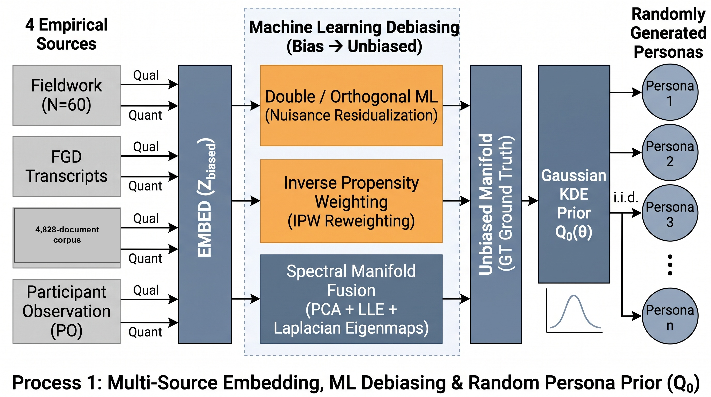
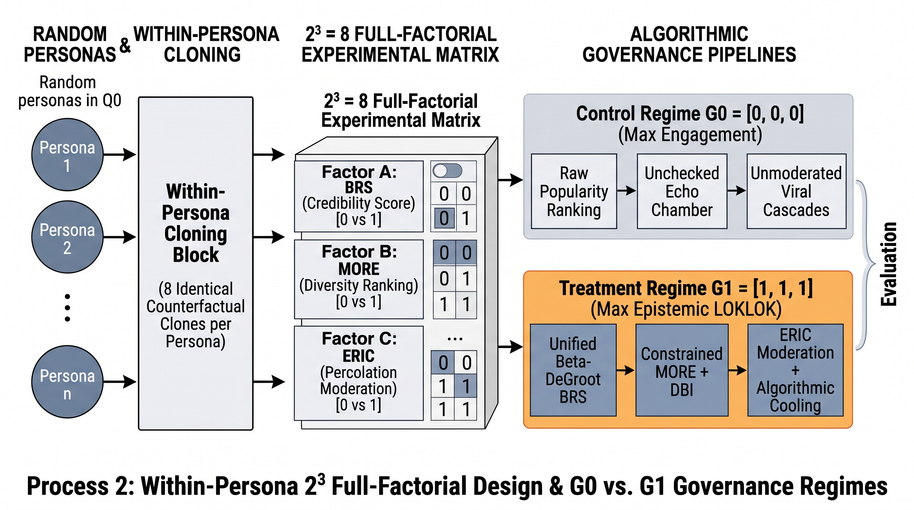
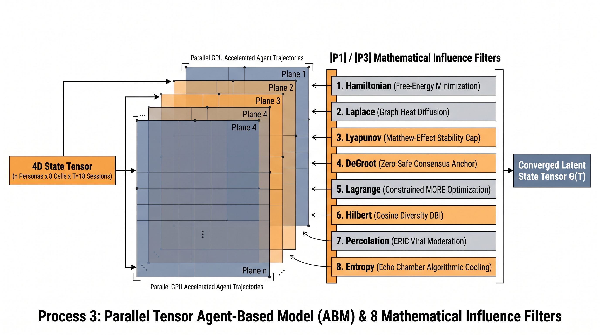

Chapters 5 and 6 · the main pipeline of the upgrade
The pipeline, block by block
One pipeline turns the project's sources into the headline numbers: measured records become a ground truth, embeddings enrich them, debiasing balances them, a spectral manifold shapes them, 500 personas are drawn, the eight-filter session loop runs, GRM-IRT scoring produces the Student Ratings, and the checks audit the whole chain. Click every block below; each stage is then explained in its own section.
1. The pipeline at a glance
2. Ground truth, and how it was formed
The thesis uses the term ground truth for three things only, and states how each was formed:
| Ground truth | How it was formed | Role |
|---|---|---|
| Measured wave (N = 52) | 60 collected questionnaires; a 21-field duplicate screen removed 8 duplicate vectors; the retained 52 rows are the analysis matrix | Anchors the model level (G0 = PB mean 5.119) and the persona spread; descriptive only |
| Human coding gold (193 segments) | Three independent coders filled the same workbook; the majority label of the three formed the gold (human_gold_majority.csv), under a pre-set usability gate | The reference against which machine coding is judged; no mechanism code met the gate, reported honestly |
| Participant-observation accounts (60) | Researcher-recorded rider narratives, thematically coded manually | Design vocabulary for the platform, not statistical evidence |
3. Sources and embeddings
Four streams enter the pipeline: the 160-segment FGD transcript, the 185-segment self-report transcript, 60 participant-observation accounts, and 4,828 corpus documents, totalling 5,258 texts. BGE-M3 (dense output only, zero-shot) embeds each text to 1,024 dimensions; the block is projected to 32 principal components and appended to the 31 quantitative features (198 total). The source ablation shows this block is contextual: removing it changes the contrast by only -0.009.

4. Debiasing
DML partials out the nuisance functions and IPW reweights by inverse propensity. The maximum nuisance correlation falls from 0.887 to 0.042 after DML; IPW reintroduces some imbalance (0.127), which is reported rather than hidden. These debiased rows, not the raw questionnaire, define the manifold the personas are drawn from.
5. Persona generation, step by step
- Input. The 52 debiased measured rows.
- Manifold. PCA + LLE + Laplacian eigenmaps project them to six axes (condition number 4.82); university labels do not separate the anchors (distance ratio 0.974), so no group claim rides on them.
- Distribution. A Gaussian KDE (or a shrunken multivariate normal if ill-conditioned) fits the distribution Q0 over those six axes.
- Draw. 500 personas are sampled from Q0, each carrying traits: critical scrutiny (0.2-0.8), echo susceptibility, and co-host preference.
- Anchoring. The G0 arm is pinned to the measured PB mean (5.119); the treatment weights are declared design inputs, not estimates.
Why this is honest: the 500 personas are a computational population. The thesis says explicitly they are not 500 respondents, and the intervals describe variation across generated personas, not human sampling error.

6. The eight filters
Each session passes the state tensor through eight filters. The ablation shows only three are outcome-active in this wiring; the rest are reported as inert rather than removed silently.
| Filter | Role in the loop | Outcome-active? |
|---|---|---|
| Hamiltonian | Free-energy diagnostic | Diagnostic only |
| Laplace | Diffusion smoothing | No change when off |
| Lyapunov | Contraction/stability | Negligible |
| DeGroot | Consensus with the BRS anchor | Yes: -0.233 when off |
| Lagrange | Diversity-constrained choice (MORE) | Yes: -0.750 when off |
| Hilbert | Embedding-geometry diversity | Yes: -0.453 when off |
| Percolation | Propagation and moderation | No change when off |
| Entropy | Echo cooling | No change when off |
Full equations and live simulations: the Algorithms page.

7. The session loop and scoring
Each persona is cloned across the 8 cells and run for 18 sessions; the state tensor (opinion, BRS, echo, chosen diversity, Hamiltonian, engagement, gate, latent trajectories) propagates through the filters. Terminal states are scored by the Samejima GRM-IRT model: the 35-item NMLS profile becomes SR comp (0-100) and the evaluative trajectory becomes SR eval (1-7) with a calibration shift that pins G0 to the measured mean.
$$\Delta\mathrm{SR}_{\mathrm{eval}} = +0.827\,[0.779, 0.875],\quad \Delta\mathrm{SR}_{\mathrm{comp}} = +11.30,\quad \Delta\mathrm{eng} = -0.183$$

8. The checks around the loop
- 256-point sweep over six mechanism parameters and five weights: 96.5% positive, median +0.567, top PRCC cred_dbi +0.77.
- One-at-a-time ablations of filters and sources, and the Zewail gate ablation (+0.194 when off).
- Randomized-assignment triangulation across four designs: the diversity path survives all; the BRS path does not.
- Placebo and negative controls pass; the machine-coding gate is the honest null.